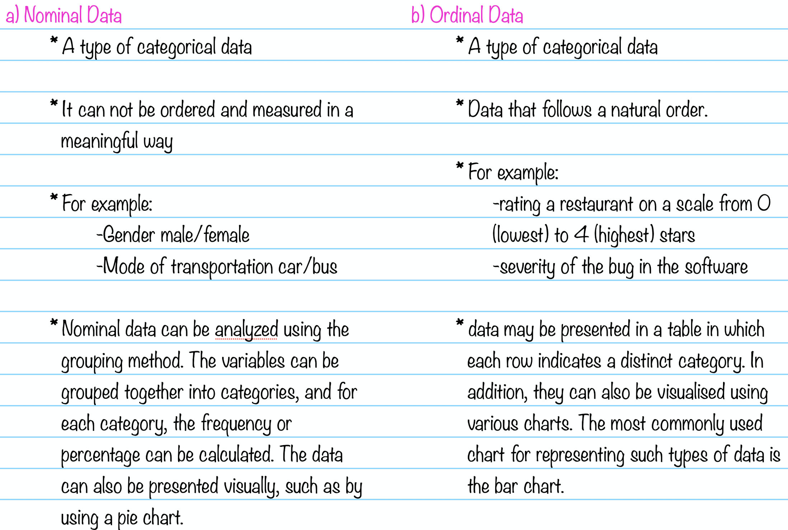
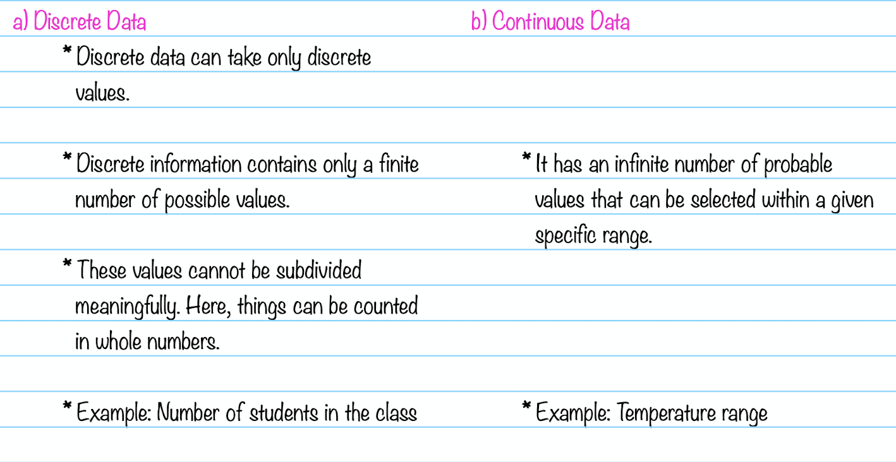

Types of data in statistics
In this section we will be talking about different types of data. I have listed down different types of data:
1. Qualitative or Categorical data
a. Nominal data
b. Ordinal data
2. Quantitative or Numerical data
a. Discrete data
b. Continious data
1. Qualitative or Categorical data
Qualitative data, also known as the categorical data, describes the data that fits into the categories.
Example for Qualitative/Categorical data: person’s gender, home town etc.
Qualitative/Categorical data are not numerical but sometimes categorical data can hold numerical values
(quantitative value), but those values do not have a mathematical sense. Examples of the categorical data
are birthdate, favourite sport, school postcode. Here, the birthdate and school postcode hold the
quantitative value, but it does not give numerical meaning.

2. Quantitative or Numerical data
Quantitative data is also known as numerical data which represents the numerical value (i.e., how much,
how often, how many). Numerical data gives information about the quantities of a specific thing.
Some examples of numerical data are height, length, size, weight, and so on.

References
https://www.khanacademy.org/math/statistics-probability/analyzing-categorical-data/
https://www.dummies.com/article/academics-the-arts/math/statistics/types-of-statistical-data-numerical-categorical-and-ordinal-169735/
https://byjus.com/maths/types-of-data-in-statistics/
https://en.wikipedia.org/wiki/Ordinal_data